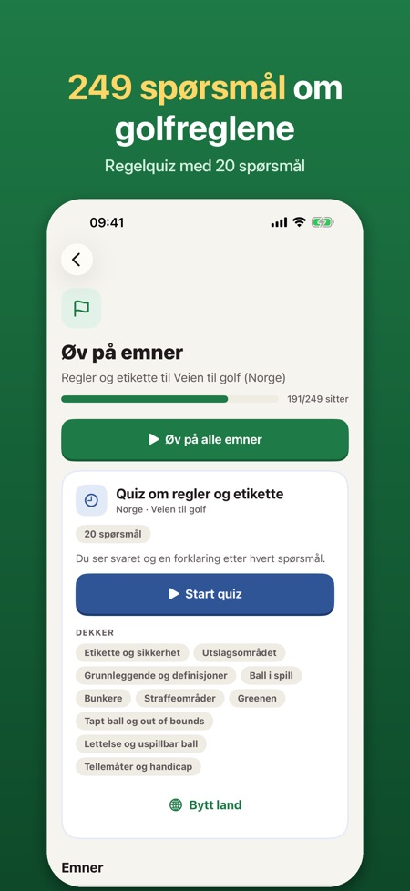
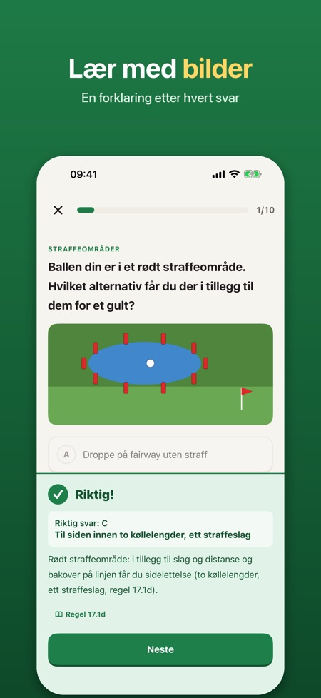
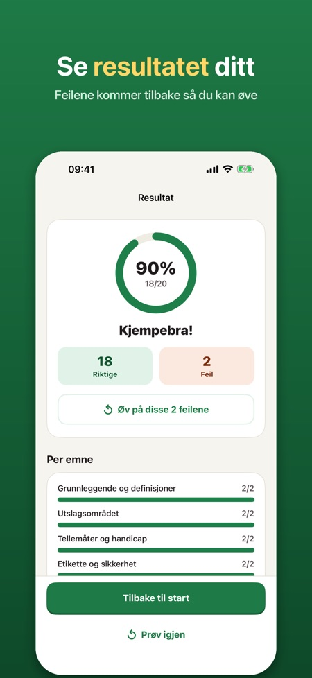

Lær golfregler og etikette. Nå 249 spørsmål, også om regelendringene i 2023. Lær golfreglene før første runde, med forklaring etter hvert svar.



Lær golfreglene og etiketten før du spiller på banen. Grønt kort er erstattet av kurset Veien til golf; appen hjelper deg med regeldelen, i ditt eget tempo. Betal én gang, ikke abonnement.
DETTE FÅR DU
• 249 spørsmål i 10 emner: etikette og sikkerhet, utslagsområdet, grunnleggende, ball i spill, bunkere, straffeområder, greenen, tapt ball og out of bounds, lettelse og uspillbar ball, tellemåter og handicap
• Bildespørsmål med tegnede situasjoner fra banen (straffeområder, grensepinner, utslagsområdet, asfaltert sti)
• Forklaring etter hvert svar, på norsk, engelsk, svensk, finsk eller tysk
• Regelquiz: 20 spørsmål fra alle emner, uten bestått/ikke bestått
• Feilene dine kommer tilbake til du har svart riktig to ganger på rad
• Regeloppslag: korte svar med enkle ord på «Hva gjør jeg når …?», med regelnummer
• Sjekkliste for første runde: hva du tar med og hvordan du oppfører deg på banen
OGSÅ FOR SVERIGE, FINLAND OG ØSTERRIKE
Velg land, så kommer spørsmålene på språket til testen der: kunnskapstesten for Grönt kort i Sverige (2 × 25 spørsmål), Green Card i Finland (15 + 15) og Turnier-Lizenz i Østerrike (31).
RIMELIG PRIS
Ti smakebitspørsmål, én kort quiz, regeloppslaget og sjekklisten er med uten kjøp. Lås opp alt med ett kjøp. Ingen abonnement, ingen reklame, ingen konto. Virker uten nett.
Quizen er trening; spør klubben din om kurset Veien til golf.
Appen er uavhengig og ikke tilknyttet Norges Golfforbund, The R&A eller USGA. Alle spørsmål og regelsammendrag er skrevet av oss; de er ikke offisielle testspørsmål eller regeltekst.